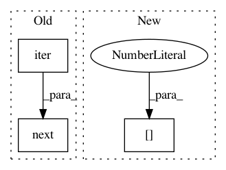

03ad8468a522b6ffe9b9abb46de24b58464b6164,texar/data/data/data_iterators.py,FeedableDataIterator,__init__,#FeedableDataIterator#Any#,320
Before Change
"feedable_data_iterator")
with tf.variable_scope(self._variable_scope):
self._handle = tf.placeholder(tf.string, shape=[], name="handle")
arb_dataset = self._datasets[next(iter(self._datasets))]
self._iterator = tf.data.Iterator.from_string_handle(
self._handle, arb_dataset.output_types,
arb_dataset.output_shapes)
After Change
"feedable_data_iterator")
with tf.variable_scope(self._variable_scope):
self._handle = tf.placeholder(tf.string, shape=[], name="handle")
first_dataset = self._datasets[sorted(self.dataset_names)[0]]
self._iterator = tf.data.Iterator.from_string_handle(
self._handle, first_dataset.output_types,
first_dataset.output_shapes)
In pattern: SUPERPATTERN
Frequency: 3
Non-data size: 3
Instances
Project Name: asyml/texar
Commit Name: 03ad8468a522b6ffe9b9abb46de24b58464b6164
Time: 2018-09-13
Author: zhitinghu@gmail.com
File Name: texar/data/data/data_iterators.py
Class Name: FeedableDataIterator
Method Name: __init__
Project Name: asyml/texar
Commit Name: 03ad8468a522b6ffe9b9abb46de24b58464b6164
Time: 2018-09-13
Author: zhitinghu@gmail.com
File Name: texar/data/data/data_iterators.py
Class Name: DataIterator
Method Name: __init__
Project Name: ray-project/ray
Commit Name: 85197deece837a1f4ffdbbffb72af6028a9b6e32
Time: 2020-11-11
Author: ameerh@berkeley.edu
File Name: python/ray/autoscaler/_private/resource_demand_scheduler.py
Class Name: ResourceDemandScheduler
Method Name: _infer_legacy_node_resources_if_needed